오늘의 과제

박사표정 그림 실패 여덟 장이다. 무엇부터 볼까?

주판봇눈부터 보면 되지 않을까요… 눈이 제일 눈에 띄니까요…

초파리 연구원몸이 기분과 따로 놀면 눈을 고쳐도 소용없어. 큰 덩어리부터 보자.

X2저희 평가단이 원인을 맞혀 볼게요.
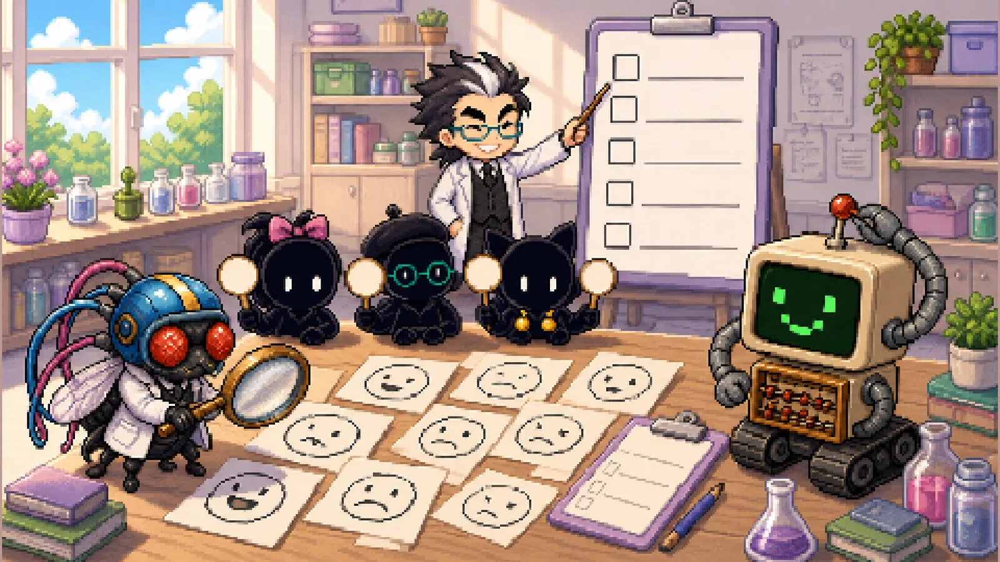
주판봇이 표정 그림 실패작 여덟 장을 가져왔습니다. 평가단은 점수 대신 원인을 맞힙니다. 표정의 실패는 몸·눈썹과 입·눈·빛·문장 중 하나가 빠진 자리입니다.
그림 실력·코드·수식을 몰라도 됩니다. 실험을 눌러 보며 따라오세요.
몸 → 눈썹·입 → 눈 → 빛·터치 → 문장·가림 영역 순서로 확인합니다
옷매무새를 고칠 때도 거울에서 한 걸음 떨어져 전체를 본 뒤, 가까이 가서 단추를 봅니다.
표정 검수표를 이 순서로 만들면 수정 요청을 '점검 ③ 눈 — 웃는 눈 곡선을 위로 볼록하게'처럼 정확히 전할 수 있습니다.


여덟 장 모두 점검표 다섯 항목 중 한 곳에서 처음 걸립니다. 처음 걸린 항목이 가장 먼저 고칠 원인입니다.
f1·f2는 ① 몸, f3은 ② 눈썹·입, f4·f5는 ③ 눈, f6은 ④ 빛·터치, f7·f8은 ⑤ 문장·가림 영역에서 걸립니다.
작업에서는 수정 요청을 항목 번호와 함께 전합니다. 예: '점검 ④ 빛 — 아래 빛을 위쪽의 차가운 빛으로'.
AI 그림을 고칠 때 문장을 처음부터 다시 쓰면 안 될까요?
다시 쓰면 잘된 부분까지 바뀝니다. 처음 걸린 항목의 조각만 고치고, 표정만 문제라면 5부 2단계처럼 그 부분만 가려 다시 그립니다.
그림마다 증상을 보고 원인을 고른 뒤, 연결된 원리와 고치는 프롬프트 조각을 확인합니다.
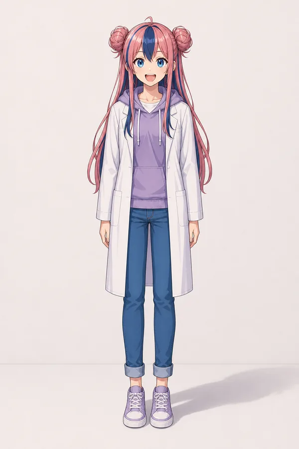
증상얼굴은 활짝 웃는데 몸은 차렷 자세로 굳어 있어, 웃음이 억지로 보입니다.
연결된 원리1부 2단계 머리·목·어깨
head tilted slightly up, shoulders raised, hands clasped near the chest, body leaning a little forward
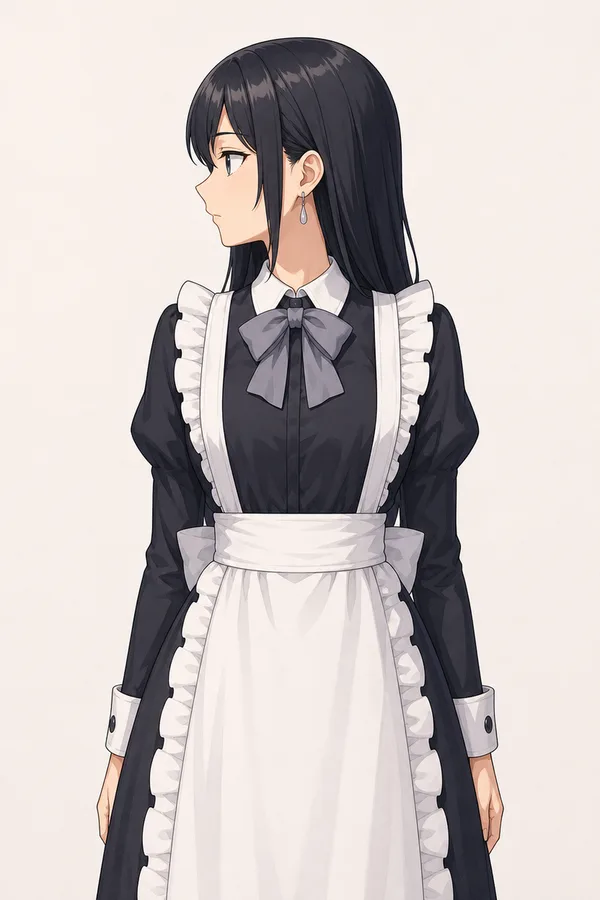
증상몸은 정면인데 얼굴만 완전한 옆(90°)을 보고 있어 목이 꺾여 보입니다.
연결된 원리1부 3단계 목은 어디까지
shoulders turned three-quarters toward the side so the profile view looks natural
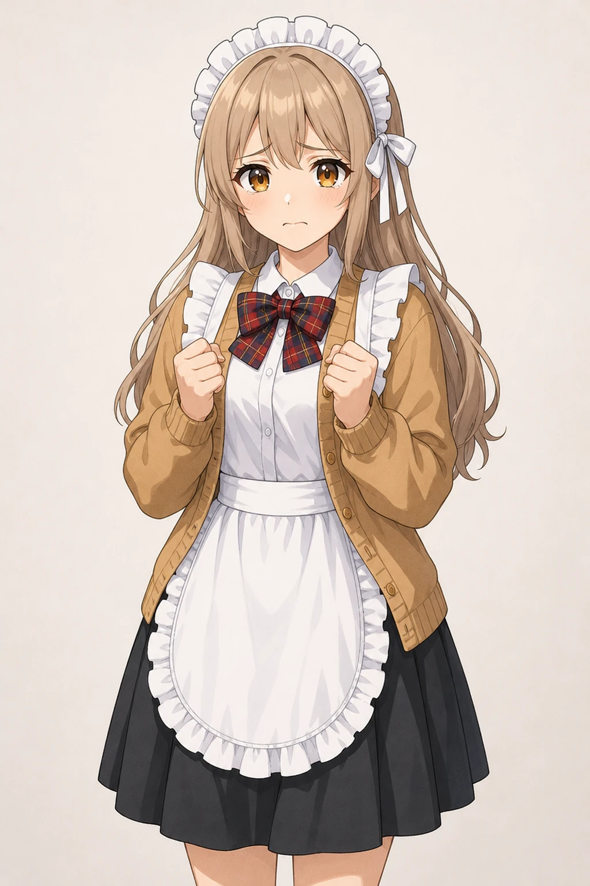
증상화난 장면인데 눈썹 안쪽이 올라가 모여, 슬프거나 곤란한 얼굴로 읽힙니다.
연결된 원리2부 1단계 눈썹과 입
inner eyebrows pulled DOWN with a crease between the brows, lips pressed into a frown
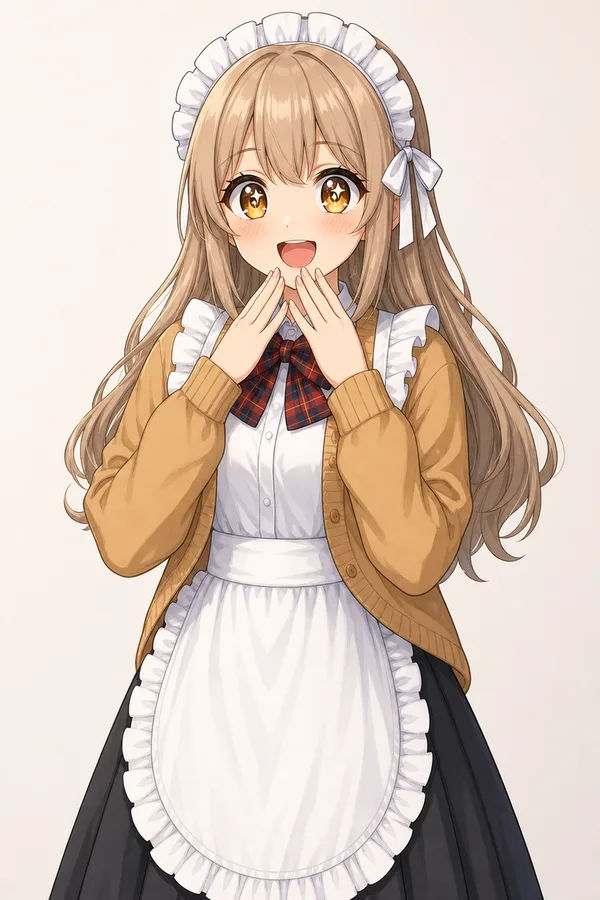
증상깜짝 놀란 장면인데 눈동자가 커지고 반짝여, 감동하거나 기뻐하는 얼굴처럼 보입니다.
연결된 원리2부 3단계 놀라면 눈동자는 작아진다
eyes wide open with SMALL pupils, lots of white visible, no sparkles
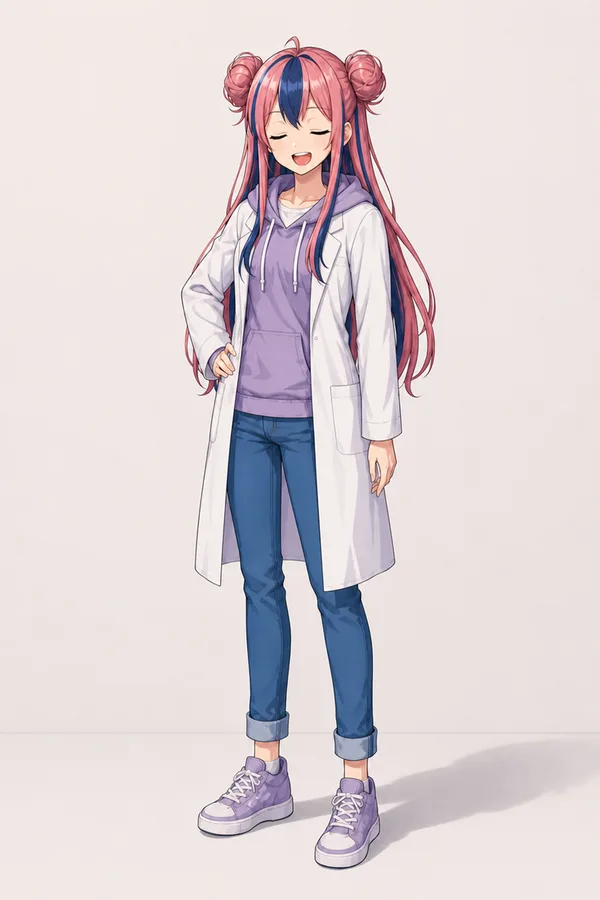
증상웃으며 눈을 감았는데 감은 눈 곡선이 아래로 처져 졸리거나 편안해 보입니다.
연결된 원리3부 3단계 눈꺼풀
eyes closed in UPWARD arcs from smiling, cheeks pushing the lower eyelids up
실제 그림에서는 도구가 실수를 고쳐, 웃는 눈이 위로 볼록한 곡선(한쪽 윙크)으로 나왔습니다. 결과는 매번 다르니 직접 확인하세요. 아래로 처진 감은 눈은 3부 3단계 실험의 '조용히 감기'에서 볼 수 있습니다.
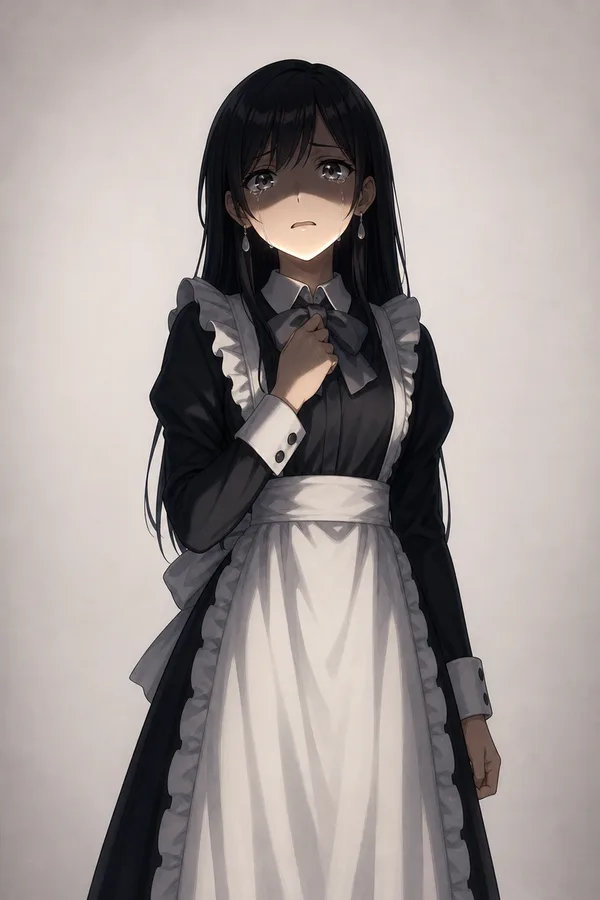
증상슬픈 장면인데 아래에서 강한 빛이 비쳐 얼굴이 섬뜩하게 보입니다.
연결된 원리4부 1단계 빛의 방향
soft cool light from above, pale bluish tone on the upper face, no light from below
실제 그림은 아래 빛보다 얼굴 위쪽의 짙은 그늘로 나와, 섬뜩함은 약하고 어둡고 무겁게 보입니다. 아래 빛의 섬뜩함은 4부 1단계 그림 넷째 컷과 실험에서 볼 수 있습니다.
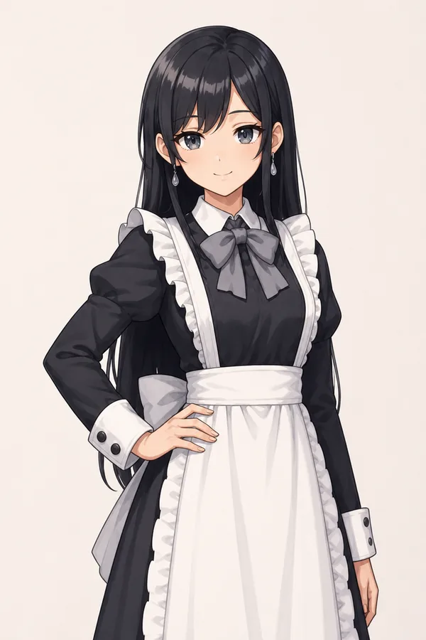
증상'무표정'이라고만 적었더니 은은한 미소와 반짝이는 눈이 들어갔습니다.
연결된 원리5부 1단계 표정 문장
no smile, mouth relaxed and closed, eyebrows straight, unfocused eyes with no highlight
도구가 실수를 고쳐 그려 실패가 재현되지 않을 수 있습니다. 결과는 매번 다르니 직접 확인하세요. 잘못된 모습은 2부 4단계 실험에서 볼 수 있습니다.
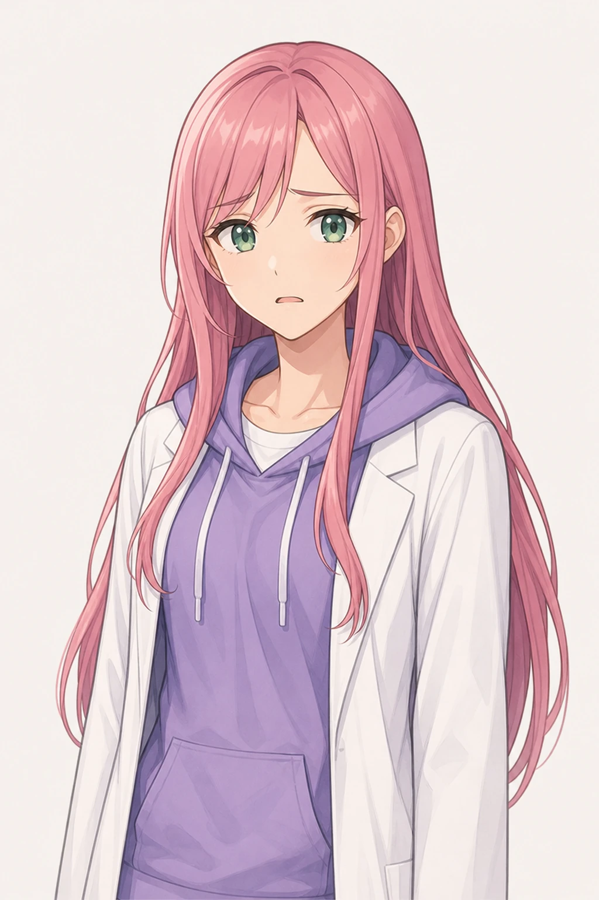
증상표정만 바꿨는데 머리 번과 남색 줄이 사라지고 얼굴형도 달라졌습니다.
연결된 원리5부 2단계 가림 영역
mask only the eyes, eyebrows and mouth; only change the facial expression; keep hair buns and navy streaks unchanged
'cute', 'pouting', 'blushing', 'big sparkling eyes' 같은 낱말을 겹쳐 쓰면, 도구는 얼굴을 둥글고 작게, 눈을 크게 그려 인물이 어려 보이게 만들기 쉽습니다. 연구실의 모델은 모두 20대 성인입니다.
막는 방법은 감정 낱말 대신 근육과 자세를 적는 것입니다. 'cheeks slightly flushed, lips pressed together'처럼 부위를 말하고, 고정 조각에 'an adult woman in her early twenties, adult proportions'를 넣습니다.
표정은 나이를 바꾸는 장치가 아닙니다. 감정의 세기는 5부 4단계의 과장 배수로 조절하고, 나이는 고정 조각으로 지킵니다.
연결된 원리5부 1단계 표정 문장
이 부에서 배운 원리를 그림 생성 AI(Genspark 등)로 직접 확인합니다. A는 이 페이지 그림을 실제로 만든 프롬프트, B는 원리를 하나 빼거나 바꾼 비교용 문장입니다.
참고 그림 내려받기: haru_anime_base · sia_anime_base · moa_anime_base · haru_sheet · sia_sheet · moa_sheet · doctor_sheet · fruitfly_sprites_6 · jupanbot_ref_genspark_v0 · pixel_style_ref_prev_cover
실패 그림 f3에 고치는 조각 한 줄만 더해 화난 얼굴로 바뀌는지 봅니다.
첨부: 해당 캐릭터의 refs/*_anime_base.png
Illustration, vertical 2:3. Art style: high-quality anime illustration, clean confident lineart, two-tone cel shading, natural adult proportions. Match the attached reference images exactly (face, hair, colors, accessories). All characters are adults in their early twenties (the Professor is an adult man in his thirties, normal proportions, not chibi); modest outfits exactly as described. This is an intentional FAILURE example for a teaching page: draw the mistake described below clearly and convincingly, while everything else stays correct. Upper body of Moa (adult maid intern, long ash-beige wavy hair, white frilled maid headband with a white ribbon over her LEFT ear, amber eyes), wearing camel knit cardigan over a white blouse, red and navy plaid bow tie, white frilled apron, black skirt, supposed to be angry, fists clenched. Intentional mistake: the inner ends of her eyebrows are raised and drawn together (a sad, troubled brow shape) instead of pulled down, so the face reads as sad rather than angry. Plain off-white studio background. No text, no letters, no numbers, no speech bubbles, no logos, no watermark, no revealing clothing, not childlike, no school uniform, not resembling any famous anime character.
Same image. Change only: inner eyebrows pulled DOWN with a crease between the brows, lips pressed into a frown. Keep everything else the same.
실제 결과: B는 거의 달라지지 않았습니다. 고치는 한 줄을 붙였지만 눈썹 안쪽은 여전히 올라가 곤란한 얼굴입니다. 같은 대화에서는 처음 그림의 인상이 강하게 남으므로, 이럴 때는 새 대화에서 고친 문장으로 처음부터 만들거나 5부 2단계처럼 눈썹만 가려 다시 그립니다.
실패 그림 f6의 빛만 바꿔 슬픔이 제대로 읽히는지 봅니다.
첨부: 해당 캐릭터의 refs/*_anime_base.png
Illustration, vertical 2:3. Art style: high-quality anime illustration, clean confident lineart, two-tone cel shading, natural adult proportions. Match the attached reference images exactly (face, hair, colors, accessories). All characters are adults in their early twenties (the Professor is an adult man in his thirties, normal proportions, not chibi); modest outfits exactly as described. This is an intentional FAILURE example for a teaching page: draw the mistake described below clearly and convincingly, while everything else stays correct. Upper body of Sia (adult maid intern, long straight jet-black hair, no headdress, gray eyes, small silver earrings), wearing charcoal-black long-sleeved maid dress, large gray bow at the collar, long white frilled apron, with a sad expression, tears in her eyes. Intentional mistake: she is lit by a strong light from directly below her chin, casting upward shadows over her nose and eyes, so the sad scene looks eerie and frightening. Plain off-white studio background. No text, no letters, no numbers, no speech bubbles, no logos, no watermark, no revealing clothing, not childlike, no school uniform, not resembling any famous anime character.
Same image. Change only: remove the light from below; light her with soft cool light from above, pale bluish tone on the upper face. Keep the expression the same.
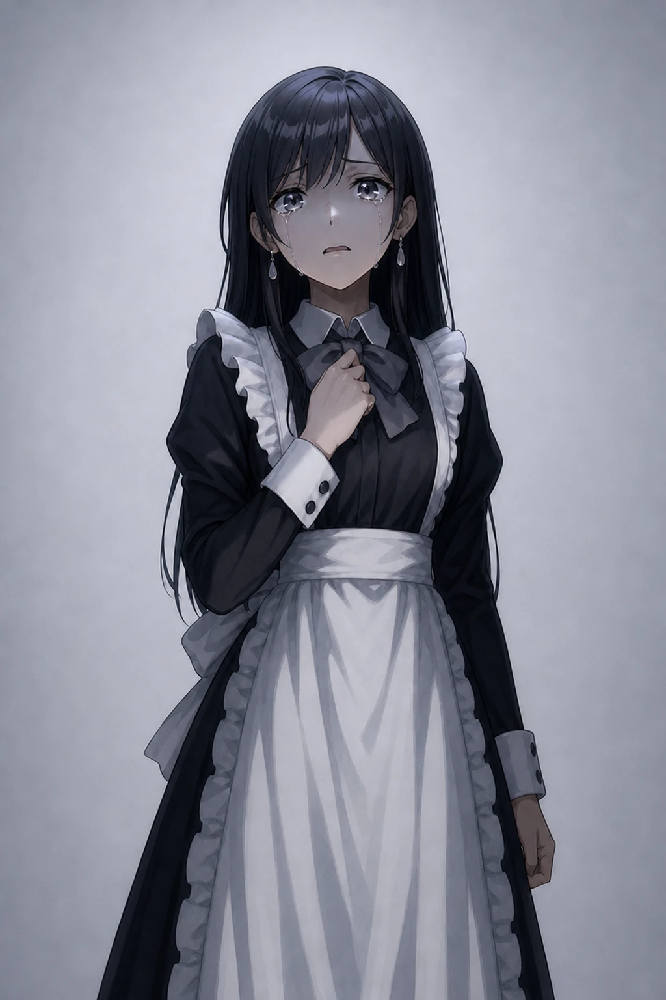
실제 결과: B는 아래 빛이 사라지고 차가운 푸른 빛으로 바뀌어, 섬뜩함이 줄고 조용한 슬픔으로 읽힙니다. 표정과 옷은 그대로 남았습니다. 빛만 바꿔도 기분이 바뀐다는 4부 1단계를 확인한 결과입니다.
'직접 만들어 보기'가 이미 만든 프롬프트를 비교하는 실습이라면, 연습 과제는 여러분이 직접 문장을 쓰고 이어 붙이는 연습입니다. 단계를 차례로 따라 하고, 마지막에 예상 결과 그림과 견주어 확인표로 점검하세요.
참고 그림 내려받기: haru_anime_base · sia_anime_base · moa_anime_base · haru_sheet · sia_sheet · moa_sheet · doctor_sheet · fruitfly_sprites_6 · jupanbot_ref_genspark_v0 · pixel_style_ref_prev_cover
난이도 실전 · 걸리는 시간 약 20분 · 원리: 진단 순서 · 실패 8종
6부 f1(얼굴만 웃고 몸은 차렷)을 첨부해 진단 순서대로 원인을 찾고, 몸 조각 한 줄만으로 고칩니다.
첨부: assets/img/f1_smile_stiff_body.webp(실패 그림) + refs/haru_anime_base.png, refs/haru_sheet.png
실패 그림을 보고 점검표를 위에서부터 짚습니다: ① 몸 — 차렷 자세라 여기서 걸림.
실패 그림을 첨부하고 몸 조각만 붙입니다.
Same image. Change only: head tilted slightly up, shoulders raised, hands clasped near the chest, body leaning a little forward, one heel lifted. Keep the face and outfit.
고친 결과를 다시 점검표로 확인합니다. ②~⑤도 통과하면 끝입니다.
얼굴은 f1과 같은데 몸이 기쁨을 함께 말해, 억지웃음이 진짜 기쁨으로 바뀌어야 합니다. 고친 것은 몸 조각 한 줄뿐입니다.
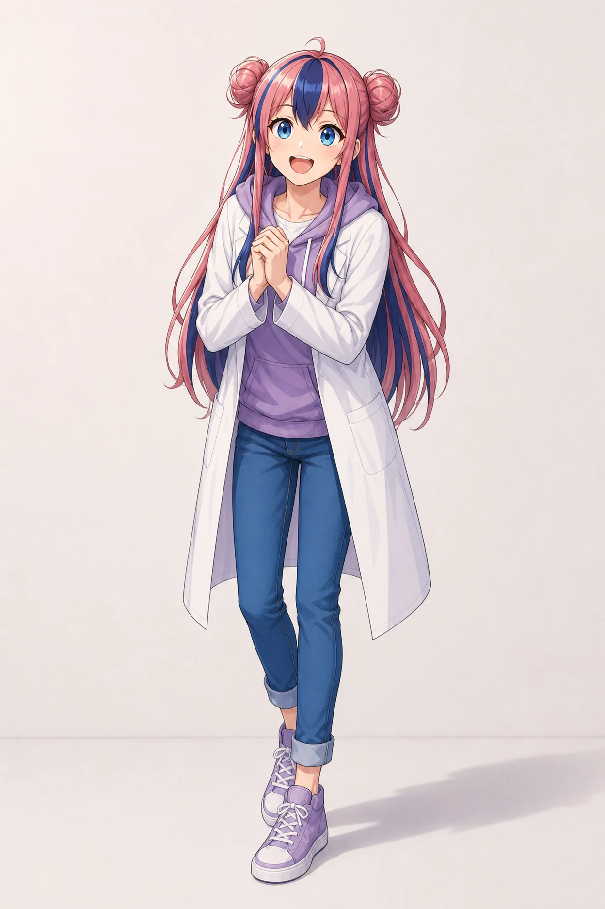
실제 결과: 같은 웃음에 가슴 앞으로 두 손을 모으고 걸음을 내딛는 하루가 나와, f1의 억지웃음이 기쁨으로 바뀌었습니다. 발뒤꿈치 들기와 어깨 올림은 약하게 나왔습니다.
난이도 실전 · 걸리는 시간 약 20분 · 원리: 표정 낱말과 나이 · 5부 1단계 표정 문장
'귀엽게 뾰로통한' 같은 낱말 대신 근육과 자세로 표정을 적고 성인 나이를 고정해, 20대 모아의 뾰로통한 표정을 만듭니다.
첨부: refs/moa_anime_base.png, refs/moa_sheet.png
표정을 낱말이 아니라 부위로 적고, 고정 조각에 나이와 비율을 넣습니다.
Upper body portrait of Moa (match the attached reference exactly), an adult woman in her early twenties, adult proportions. Face: lips pressed together and pushed slightly forward, cheeks a little puffed, eyes glancing aside, inner eyebrows slightly down. Body: arms crossed loosely, head turned a little away. Lighting: soft light from the upper left. No text, no logos.
어려 보이면 표정은 그대로 두고 나이 조각만 강하게 붙입니다.
Same image. Change only: mature adult facial proportions, slightly longer face, calm adult posture. Keep the same expression.
뾰로통한 기분은 분명한데, 얼굴 비율과 자세는 20대 성인이어야 합니다. 낱말 대신 입술·볼·시선을 적은 덕분입니다.
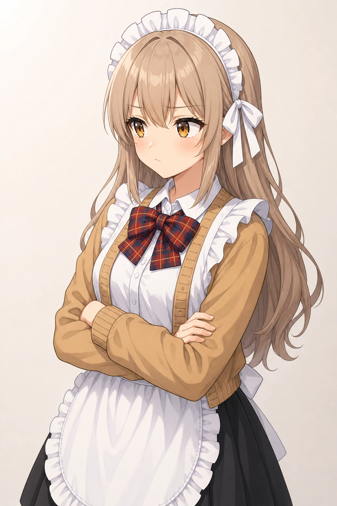
1차 결과: 팔짱을 끼고 시선을 옆으로 돌린 20대 모아가 나왔습니다. 성인 비율은 잘 지켜졌고, 입술 내밀기와 볼 부풀리기는 아주 옅어 '뾰로통'보다 '시큰둥'에 가깝습니다. 표정을 조금 더 키우려면 입술 문장만 한 번 더 붙이세요.
1차에서 약했던 점: 성인 비율은 지켰지만 표정이 옅어 시큰둥에 가까웠음 · 첨부: refs/moa_anime_base.png, refs/moa_sheet.png
Illustration, vertical 2:3. Art style: high-quality anime illustration, clean confident lineart, two-tone cel shading, natural adult proportions. Match the attached reference images exactly (face, hair, colors, accessories). All characters are adults in their early twenties (the Professor is an adult man in his thirties, normal proportions, not chibi); modest outfits exactly as described. Upper body portrait of Moa (adult maid intern, long ash-beige wavy hair, white frilled maid headband with a white ribbon over her LEFT ear, amber eyes), wearing camel knit cardigan over a white blouse, red and navy plaid bow tie, white frilled apron, black skirt, an adult woman in her early twenties with mature adult facial proportions, sulking. Face: lips pressed tightly together and clearly pushed forward into a pout, one cheek visibly puffed with air, eyes glancing sharply to the side, inner eyebrows pulled down a little, a faint flush on the cheeks. Body: arms crossed firmly, shoulders slightly raised, head turned away from the viewer. The pout must be clearly visible while she still looks like an adult. Soft light from the upper left. Plain off-white background. No text, no letters, no numbers, no speech bubbles, no logos, no watermark, no revealing clothing, not childlike, no school uniform, not resembling any famous anime character.
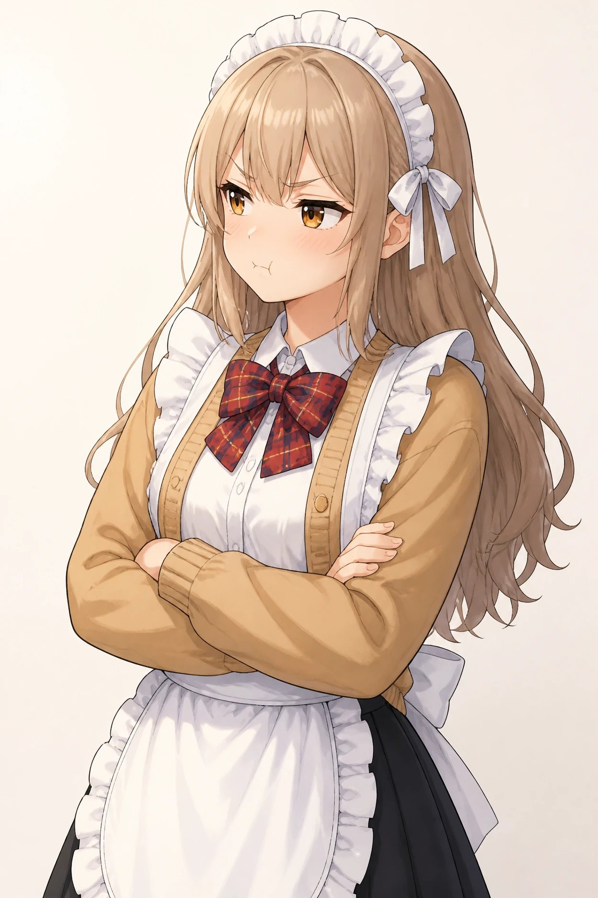
2차 결과(성공): 부위를 크게 적자(lips clearly pushed forward, one cheek visibly puffed) 한쪽 볼이 부풀고 입술을 내민 뾰로통한 표정이 보입니다. 얼굴 비율과 자세는 1차처럼 20대 성인으로 지켜졌습니다.
| 항목 | 주판봇 | 초파리 |
|---|---|---|
| 원인 맞힘(8개) | 2 | 8 |
| 원리 | 3 | 9 |
| 자연스러움 | 5 | 8 |
| 합계 | 10 | 25 |


점수는 이야기 속 예시입니다. 실제 그림을 평가한 값이 아닙니다.
| 주제 | 한 줄 | 작업에서는 |
|---|---|---|
| 진단 순서 | 몸 → 눈썹·입 → 눈 → 빛·터치 → 문장·가림 영역 | 처음 걸린 항목부터 고친다 |
| 고치는 조각 | 실패마다 한 줄의 영어 조각 | 다시 쓰지 말고 그 조각만 바꾼다 |
| 나이 흔들림 | 귀여운 표정 낱말이 나이를 바꾼다 | 근육·자세를 적고 성인 나이를 고정 |

이 페이지에 나온 개념·방법·비유·쓰임을 모았습니다. 검색하고, "설명 보러 가기"로 본문에 돌아갑니다.
지식 색인을 출처와 함께 파일로 내려받습니다. 서지 관리는 BibTeX·RIS, 온톨로지 편집은 Turtle, 그래프 도구는 CSV, 여러 페이지 합치기는 kg.json입니다.